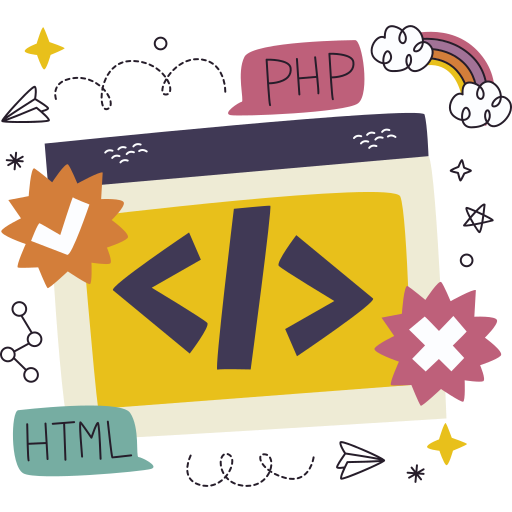
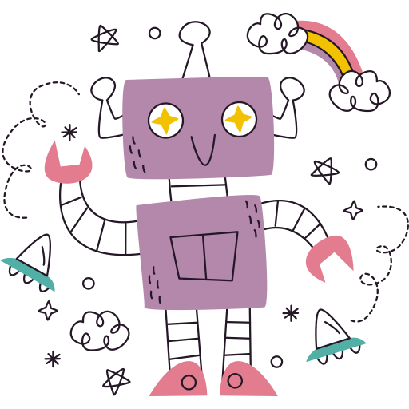
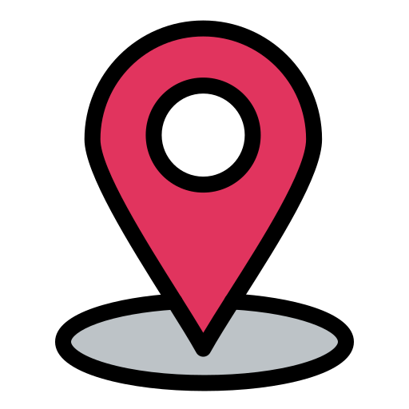

AMELIAS EM TECH
Meninas aprendendo tecnologia, criando o futuro!
Aqui, Amelia é escolha e autonomia.
Sobre Nós
O Amelias Em Tech é um projeto gratuito criado para transformar a relação de meninas de 10 a 15 anos com o mundo digital.
Mais do que apenas ensinar a usar ferramentas, nosso objetivo é proporcionar uma aproximação real com a tecnologia.
Queremos que cada participante desenvolva confiança e autonomia, percebendo que a tecnologia não é apenas algo para ser consumido, mas sim uma ferramenta de criação para o futuro.
Aqui, abrimos portas para que meninas de baixa renda vejam na tecnologia uma nova e brilhante possibilidade de futuro.
Por que Amelias?
O nome nasce da vontade de ressignificar. Historicamente, a 'Amélia' era vista como a mulher que não tinha querer. No nosso projeto, Amelia é aquela que escolhe, que cria, que programa e que constrói o seu próprio caminho!
O que ensinamos?

Programação básica
Aprender lógica e criar primeiros projetos.
Tecnologia no celular
Apps, desafios e experimentos práticos.

Inteligência artificial
Explorar IA de forma criativa e responsável.
Projetos e comunidade
Aprender juntas e compartilhar descobertas.
Por que o Amelias importa?
Os números mostram a realidade que queremos mudar.
Mulheres representam menos de 20% dos profissionais de TI no Brasil.
Pretalab 2023Apenas 15% dos concluintes de cursos de TI e Computação são mulheres.
IBGE / Censo 2022No ritmo atual, a paridade de gênero em TI só seria atingida no ano 2110.
Observatório Softex
Em Minas Gerais, a concentração de mulheres na tecnologia é de apenas 8,4%.
Serasa ExperianSobre a Idealizadora

Olá! Eu sou a Paula Luiza, Cientista da Computação com especialização em Ciência de Dados, e tenho mais de 5 anos de experiência na tecnologia.
Além do lado técnico, carrego um propósito forte no apoio a outras mulheres. Sou Diretora da WorldWide Women in Tech, professora voluntária na WoMakersCode e voluntária na {reprograma}. Tudo isso para que mais mulheres e meninas tenham oportunidades reais de aprender, crescer e se destacar na tecnologia.
Eu sei o quanto a educação, a tecnologia e oportunidades gratuitas podem transformar vidas, pois mudaram a minha!